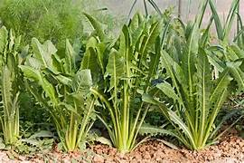
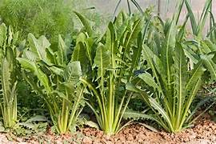

Acelga
-
Como cultiva
 Ir a la informacion
Ir a la informacion
-
Achicoria
Como cultiva
 Ir a la informacion -
Albaca
Como cultiva
.jpg) Ir a la informacion
Ir a la informacion
La posibilidad de cubrir las necesidades de autoconsumo, mediante la producción casera de alimentos sanos, libres de pesticidas, recuperando la cultura que otrora movilizara a nuestros abuelos, que les permitía lograr el objetivo utilizando el „terrenito‰ del fondo de su casa, es el logro más importante del Programa Pro Huerta. El gran número de beneficiarios que conquistó el programa en pocos años, no sólo es consecuencia de lo antedicho, sino también del espléndido esfuerzo realizado por familias, entidades, escuelas, docentes, ONGs, cultos religiosos, que junto a profesionales y referentes del Programa, se capacitaron para poder ser eficientes en sus emprendimientos.
Esa capacitación, valuarte del Pro Huerta, es sin duda la herramienta más importante con que han contado los beneficiarios para llevar adelante sus proyectos. El dictado de cursos, el seguimiento y realización de reuniones en el terreno, sobre la huerta, el manejo de las plagas sin agroquímicos, el manejo de las rotaciones del suelo, la conservación natural y sana de los excedentes de la huerta para ser utilizados fuera de la estación de producción, son sin dudas logros alcanzados por todos.
Es como apoyo a este proceso de capacitación constante que les ofrecemos este Manual de cultivos para la Huerta Orgánica Familiar. Creemos que encontrarán en sus textos la orientación necesaria para llevar adelante sus huertas, tan valiosas para cada uno de Uds. por ser un logro personal, realizado con su esfuerzo y sus propias manos.
Como cultiva
Ir a la informacion
Como cultiva
 Ir a la informacionComo cultiva
Ir a la informacion